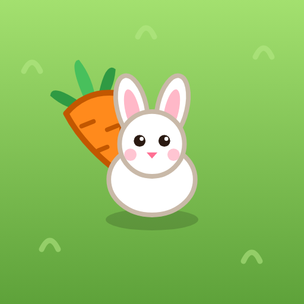

Tavşan Köyü
Çocuklar için bulmaca oyunu
Yardım ve iletişim
Oyunla ilgili soru, görüş ve sorunlarınız için bize yazın: oguzhan.guven34@gmail.com
E-postalara genellikle birkaç gün içinde yanıt veriyoruz.
Sık sorulanlar
- Oyun nasıl oynanır? Tavşana dokunursunuz; önü boşsa zıplayarak yuvaya gider. Yoldaki havuç, kendi rengindeki tavşana uçar. Tavşan doyunca köye döner.
- Yuvalar doldu, ne olacak? Oyun bir matematik sorusu sorar. Doğru cevap verirseniz son hamleniz geri alınır. Her bölümde iki hakkınız var.
- İnternet gerekiyor mu? Hayır, oyun çevrimdışı çalışır.
- Müziği nasıl kapatırım? Sağ üstteki hoparlör düğmesine dokunun.
- İlerlemem kayboldu. Kaldığınız bölüm telefonun hafızasında tutulur; uygulama silinirse kayıt da silinir.
- Reklamlar neden var? Oyun ücretsizdir. Alttaki şerit reklam giderleri karşılar; çocuklara uygun ve kişiselleştirilmemiş reklamlar gösterilir.